What's in release 0.2, by area, with pictures. It carries on from What's new (22 October to 1 November), which stays as history.
The short version
- 0.2 = sim-complete, car-ready. Everything runs in Gazebo and every test passes. Nothing has moved the real car yet: that's 0.3.
- Screens: a hardware panel that can find the steering's ends; a cockpit with every driving detail on one screen; new colours everywhere; a little robot hiding in them.
- Car day: in two days. Day A destroys nothing; Day B upgrades, once the backups are proven.
- Commands: 89 → 45. One page lists them all.
- Ideas kept for 0.3: the diffusion planner (designed), the talking model, the Initial D HUD.
Status words: sim = works in Gazebo; built = built and tested, not in a full run; planned = a design, no code.
0.2 in one page
| Area | What 0.2 has | Status |
|---|---|---|
| Steering | find the steering actuator's ends and centre: limp or jog, mark, equal limits, a lock-to-lock check that stops on resistance | built |
| Screens | hardware panel (2 pages), cockpit, debug screen, HUD, map; Initial D red and black on every screen (Catppuccin's still a yaml line away); the little robot | sim |
| Car day | Day A and Day B, the people, sign-offs, a setup script with STOPs | written; dry-run only |
| Know the car | the tests that measure the car, in order, with when to stop | written |
| Commands | 45, grouped | done |
| Localization, perception, planning | as in What's new; the lattice is the default planner where the car may reverse | sim |
| Diffusion planner | a design: a learned planner beside the lattice, with a safety check | planned |
When is 0.2 done?
When every box on the 0.2 checklist is ticked. Where it stands on 2 November:
| Check | State |
|---|---|
Every test green (pixi run test) |
✅ 1516 tests, 0 failures (2 Nov) |
The kit ready (car-day-check) |
⬜ 11 missing: downloads and the ESP32 tools (below) |
The ESP32's emulator check (esp qemu-check) |
⬜ the ESP32 tools not installed on this Mac yet |
car_setup.sh's dry run, every role |
✅ only the two planned refusals |
| The first-move gaps (TODO 74) | 🔧 the joystick-alive check built, passed on the bench (2 Nov), its car test in A9b; ⬜ the throttle cap |
| The people named | ⬜ Ben and the team |
The hardware lead's answers (H1, C1, .211, the router) |
⬜ the hardware lead |
What came in on 1 and 2 November
| What | Where | Status |
|---|---|---|
| The steering calibration, from the firmware to the screen | below | built |
| The cockpit's first screenshot, live from Gazebo | below | sim |
| Debug screen and hardware panel in the new colours | below | sim |
| Car day in two days, the people, sign-offs | below | written |
car_setup.sh: set up one computer |
Car setup | dry-run only |
| Know the car: the order of the tests, and when to stop | Know the car | written |
| 89 commands down to 45 | below | done |
| The little robot (a tribute to WALL-E) | below | built |
| The diffusion planner's design | below | planned |
| The road to 0.2, reviewed by three reviewers | design | done |
The commands
Less is more: 89 commands became 45. Each group is one command with a word after it.
| Group | Commands |
|---|---|
| Every day | build, test, lint, docs |
| Try it without the car | turtle, sim, bench, demo (--debug), pick, keyboard, view, carla-car, drive-to-point, ghost, sim-fault |
| The screens | hud, map, debug-hud, hw-panel (each with --demo), rviz, graph |
| Check that it works | check <profile>, bench-check, sim-check, measure <what>, ndt-map |
| At the car | car <machine>, estop, clear <estop, gate, geofence, watchdog>, actuator-test, calibrate-camera, doctor |
| Before car day | car-day-check, car-day-build, car-kit, get <what> |
| Firmware | pico <board> <step>, esp <step> |
| AI and maps | detect, laptop-bench, talk; -e mcp mcp, -e routes router |
| Old | New |
|---|---|
hud-demo, debugdemo |
hud --demo, demo --debug |
estop-clear, gate-clear |
clear estop, clear gate |
esp-build, spine-flash |
esp build, pico spine flash |
get-models, vendor |
get models, get vendor |
controller-compare, timing-test |
measure controllers, measure timing |
Every command, with what it does: README's "Every command". The rare ones run as scripts (its "Without a task" table).
The screens
| Screen | Where | For |
|---|---|---|
| Hardware panel | a laptop, wired | the hardware at the lowest level: buttons, sensors, the steering's ends |
| Cockpit (Lichtblick) | the lab or a laptop | every driving detail on one screen |
| Debug screen | the lab or a laptop | what the car sees, in 3D |
| HUD and map | in the car | speed, state, the route |
The hardware panel
Every sensor from its own node, and very simple buttons. The car moves only while you hold Space. Live against Gazebo:

Its second page, STEERING CAL, is below.
The cockpit
Every driving detail on one screen, like Foxglove's nuScenes demo: both cameras, the status lights, the street map, the 3D view with the plan, speed and steering plots, and the switches. Its first screenshot, Gazebo's road world, driving to a goal 25 m ahead:
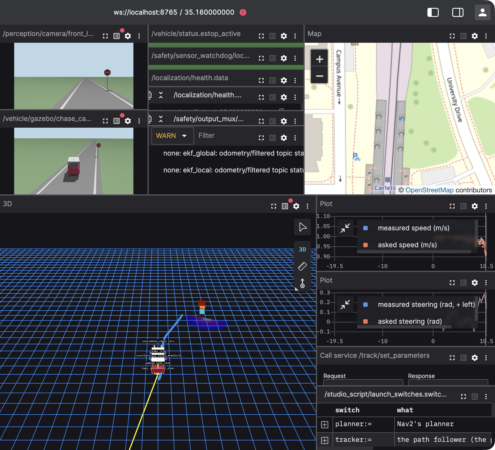
Open it, already connected: Foxglove.
The debug screen
The lidar's cubes in 3D, where each localizer puts the car, Nav2's own cubes and the localization health checks. Live against Gazebo, in the new colours:
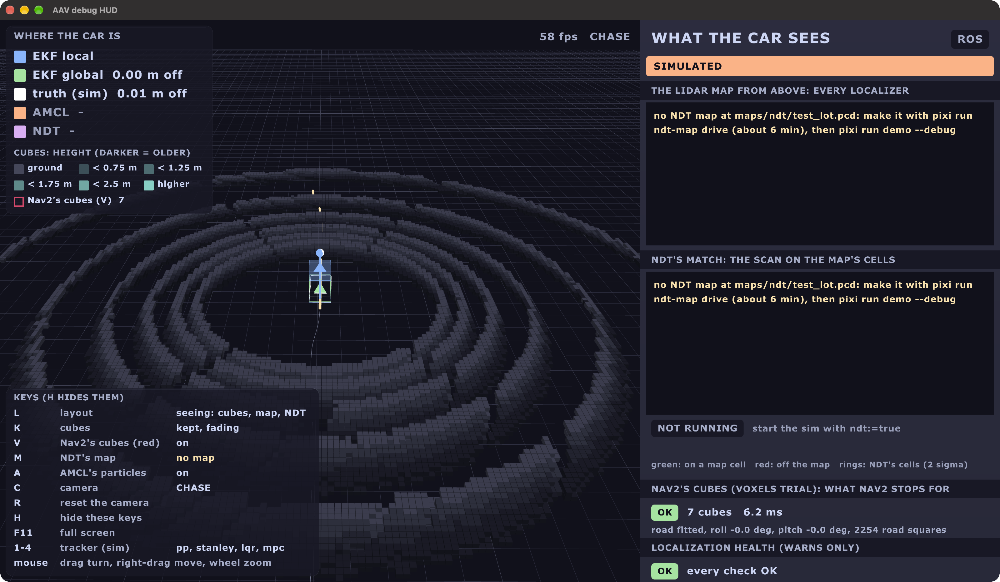
The screens: new colours
Ben, 1 Nov: "kind of ugly", too many primary colours. Then, 2 Nov: "something nicer
than Catppuccin": Initial D red and black, on every screen. Every screen shares one
theme, chosen in its yaml (theme:):
| Theme | For |
|---|---|
initial_d (the default) |
the car, day or night: black, white, Carleton's red; sharp |
mocha |
dark and soft: night |
latte |
light: daytime |
calm |
Ben's colours from his Carleton work: waits on Ben |
| Initial D | Light (Latte) |
|---|---|
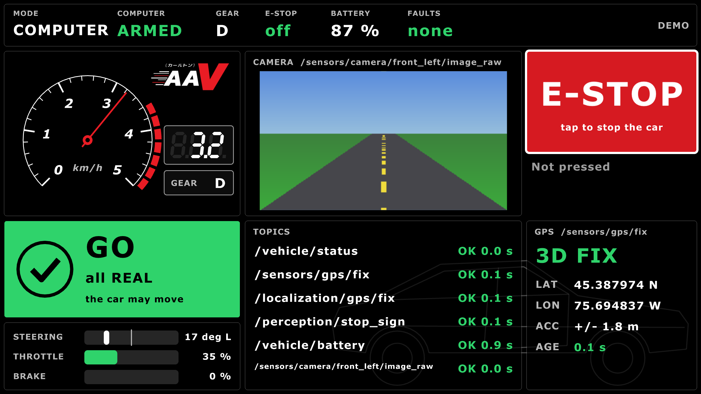 |
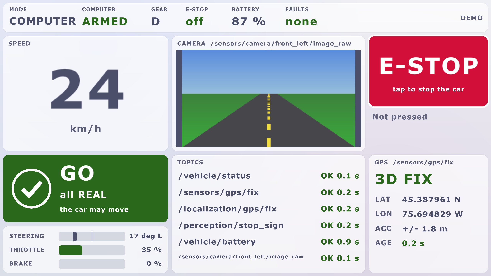 |
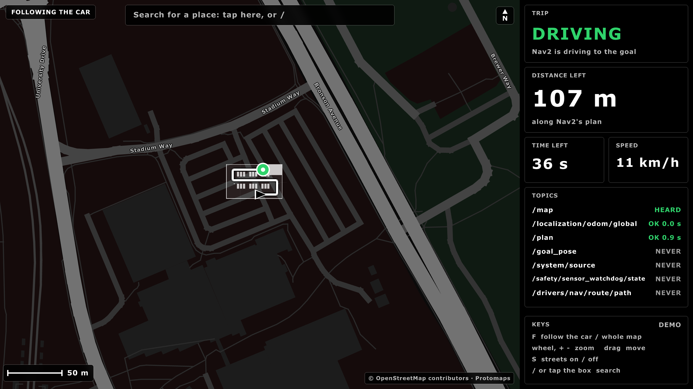 |
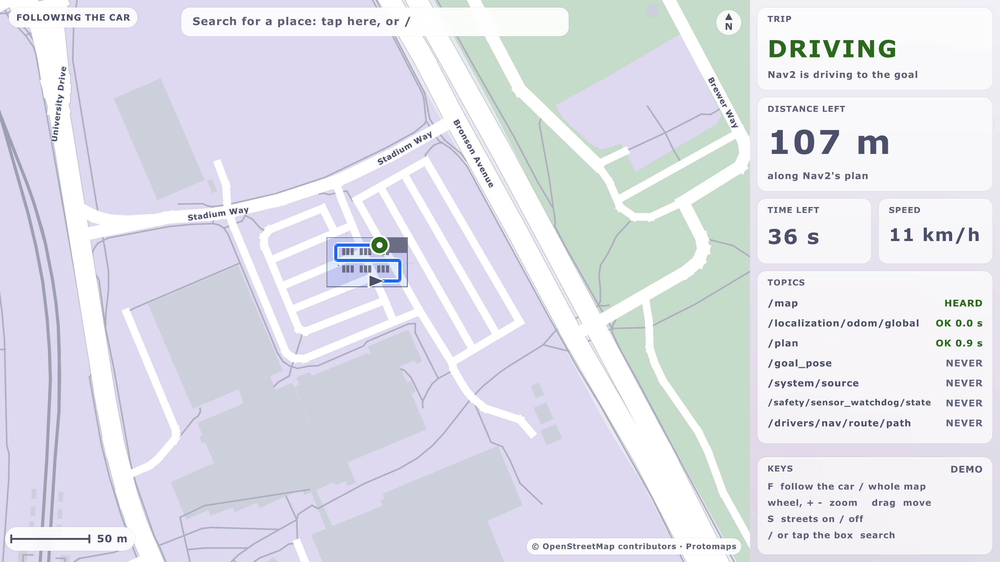 |
 |
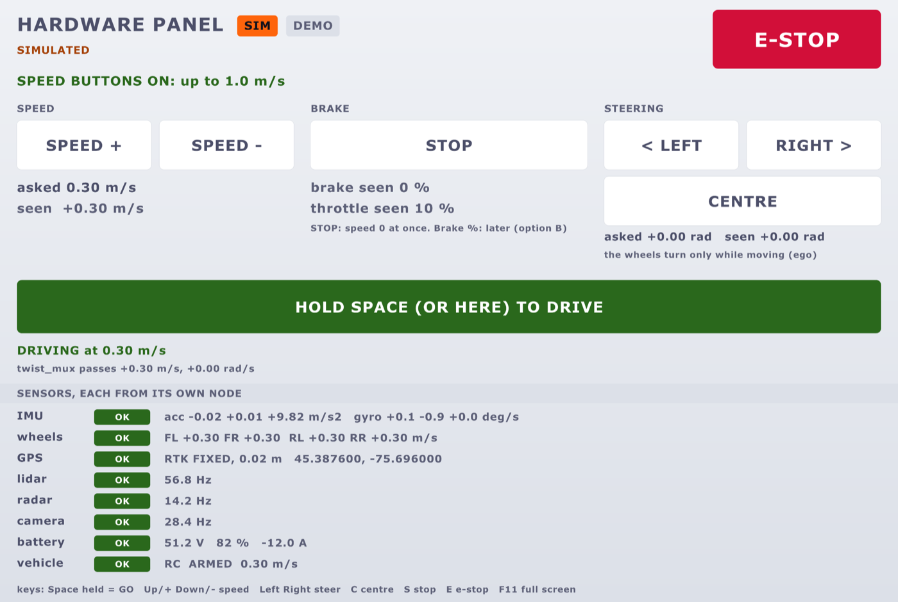 |
Mocha and Latte are Catppuccin's palettes, MIT licence. More: Screens.
The little robot
A tribute to WALL-E, drawn by us: a boxy robot on treads, with two big round eyes.
| Where | What it does |
|---|---|
Map window (car_marker: robot) |
the car is the robot, seen from above; its treads cover the car's true outline |
| Hardware panel, debug screen | after 60 s of quiet, the eyes peek over the bottom edge and blink |
| Hardware panel | it drives across at start-up, and after a lock-to-lock check passes |
| On the map | Peeking |
|---|---|
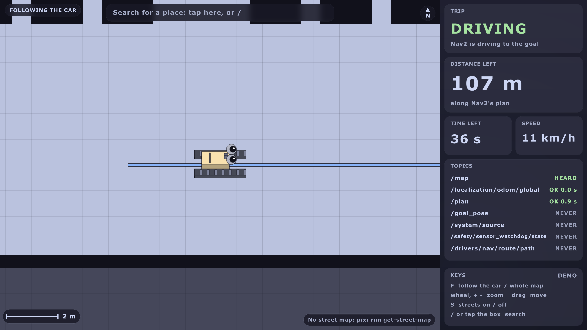 |
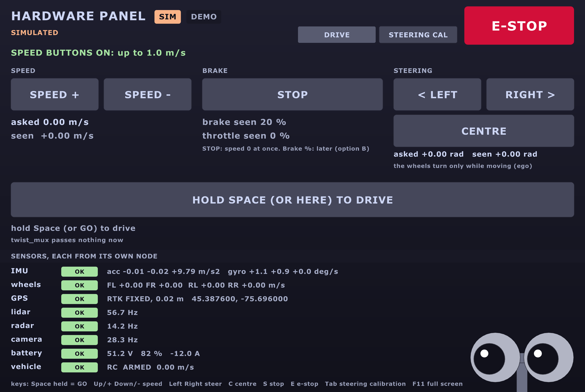 |
It never covers a button or a line of words, and never shows while the car moves or
anything warns. Turn it off with easter_egg: false. More:
Screens.
Steering: find the ends and the centre
The steering pulls right: its centre is probably off. 0.2 can measure the steering actuator's two ends and its centre, then set equal limits on both sides.
laptop (hardware panel) ──► Orin bridge ──► ESP32 ──► steering actuator
GO LIMP / STEP link version 3 limp, or (Jrk G2 board)
MARK left/centre/right small steps
◄── the raw position (counts), 10 times a second ──┘| Step | What you do | What it does |
|---|---|---|
| 1 | GO LIMP | the motor lets go; you turn the wheels by hand |
| 2 | or STEP LEFT / RIGHT | small steps, inside today's limits |
| 3 | MARK left, centre, right | it works out equal limits: the smaller side less 5 % |
| 4 | LOCK-TO-LOCK CHECK | slowly centre → left → centre → right → centre; stops and holds at any resistance |
| 5 | SAVE | writes the numbers to a file; a person copies them in a pull request |
| Passed | Stopped on a stiff spot |
|---|---|
 |
 |
The safety rules, in the firmware and tested:
| Rule | Why |
|---|---|
| Only while stopped, with the brake on | nothing else may move |
| Throttle held at zero | the same |
| Leaving limp holds where the wheels are | nothing snaps back |
| The Orin's heartbeat lost → calibration ends | a dropped laptop is safe |
Never writes the firmware or vehicle.yaml |
a person checks the numbers |
On car day the first way is Pololu's own program over USB (Way A): today's C++ firmware can't do this. The panel's page (Way B) comes once the Rust firmware with link version 3 is on the car. More: Actuator tests.
Car day, in two days
Three reviewers read the plan and said: don't destroy the way back before the car has moved on our code. Ben agreed.
| Day | What | Can you undo it? |
|---|---|---|
| Day A | back up every machine (checked); steering ends (Way A); brake on stands; the Rust ESP32 and the joystick on stands; walking pace once a named person signs; the car tests and the map | yes: nothing destroyed |
| Day B (later) | the Pis to Ubuntu 24.04; the Orin reflashed to JetPack 7.2; the lab desktop | only from the backups, so a restore is proven first |
Every step you can't undo has a sign-off line (who, time). The people:
| Role | Does |
|---|---|
| Hardware lead | decides on the hardware; OKs the ESP32 flash |
| E-stop person | holds the Kar-Tech stop, always |
| Safety driver | in the seat |
| Laptop person | runs the commands |
| Approver | signs the steps you can't undo |
The runbook: Car day. Setting up one computer: Car setup.
car_setup.sh: one computer at a time
| It does | Safe because |
|---|---|
| back up, upgrade, install, start at boot, check | it only prints the steps unless given --apply and the role typed in |
do-release-upgrade (Ubuntu 22.04 → 24.04) |
only with --release-upgrade; never on Pi OS or the Orin |
| STOPs | a pending reboot, the wrong computer, an upgrade too early |
Know the car
Tests that measure the car, so each drive makes it more exact. Each fixes one number in
vehicle.yaml; repeat until the error is small.
| Test | Fixes |
|---|---|
| Drive 10 m straight, tape it | the wheel size (today 0.36 m or 0.42 m: a 17 % speed error) |
| Speed step, 0 → 1 m/s | how fast it speeds up |
| Brake from 1 m/s | stopping distance |
| Coast down | drag |
| A circle at a fixed steering angle | steering gain and centre |
| Lock to lock | the steering limits |
Record every session with the lidar on (tools/record.sh --lidar): the same drives build
the lot's NDT map. More: Know the car.
How the car thinks: the algorithms
The same stack as in What's new. In plain words:
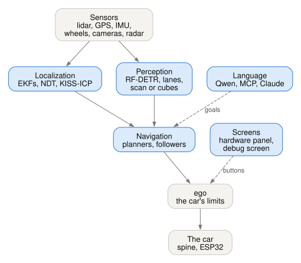
Where am I? (localization)
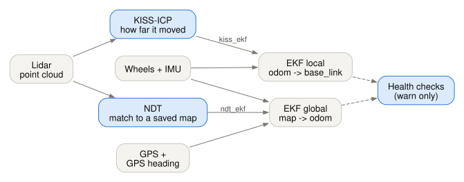
| Part | In plain words | Default? |
|---|---|---|
| EKF local | blends the wheels and the IMU: smooth, never jumps, drifts slowly | yes |
| EKF global | adds the GPS (and NDT): knows where on the map, may jump a little | yes |
| NDT | matches the lidar's points to a saved map of the lot: "I'm here" | trial (ndt_ekf:=true) |
| KISS-ICP | matches each lidar scan to the last one: "I moved this far" | trial (kiss_ekf:=true) |
Why two EKFs? They do talk, through TF. The GPS only goes into the global one, so the car's short-term motion never jumps when a GPS fix lands (ROS's REP-105).

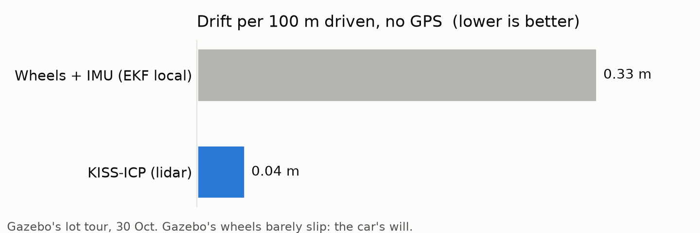
What's around? (perception)
| Part | In plain words |
|---|---|
| RF-DETR Nano | finds objects and stop signs in the camera (Apache-2.0, not YOLO) |
| OpenCV lanes | finds the lane lines |
| Lidar scan or cubes | turns the lidar's points into a flat scan, or into 3D cubes, for Nav2 |
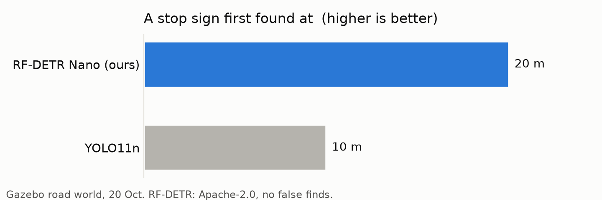
Getting there: planners and path followers
A planner draws the path; a path follower steers along it.
| Part | In plain words | Default? |
|---|---|---|
| State Lattice | joins short moves the car can really make, forwards and backwards | yes, where it may reverse |
| Hybrid-A* | searches forward moves only | yes, forward only |
| MPPI | tries hundreds of short futures, keeps the best; reads the costmap | yes |
| RPP (Regulated Pure Pursuit) | aims at a point ahead on the path, slows in bends | trial |
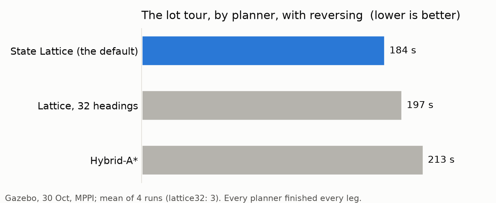
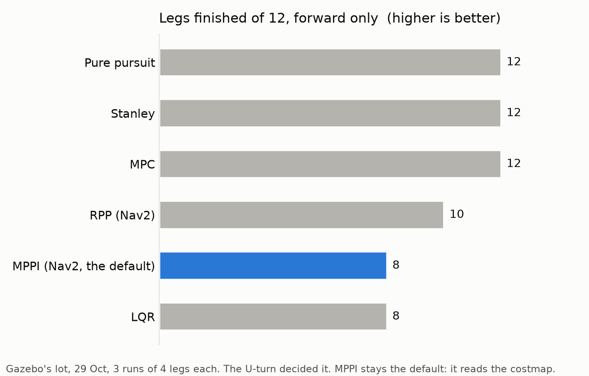
Planned: the diffusion planner
A small model that turns random noise into a path in a few steps, and can offer several paths at once. Ben, 1 Nov: "I want that in." It's designed, for 0.3:
| Question | Answer in the design |
|---|---|
| Where it plugs in | one more planner, planner:=diffusion, beside the lattice |
| What keeps it safe | every path checked (collisions, the car's turns, reversing); if none pass, the lattice's path |
| What it learns from | our own lattice and Hybrid-A* paths in Gazebo: about 100,000 |
| What runs it | a Rust node; the model on TensorRT (Orin) or Core ML (Mac) |
| How it's scored | the same trials as the lattice: 16 of 16 legs, 184 s |
The design: Diffusion planner.
Kept for 0.3 and later
Every idea is kept (Ben, 1 Nov: "I do like the 23 ideas? lets keep them around").
| Idea | State |
|---|---|
| Car day itself (0.3 = it drove) | runbook ready |
| The diffusion planner | designed |
| The talking model: explains, never drives | idea |
| The Initial D HUD: the arcade gauge in Carleton red and black, our own logo | in 0.2: on every screen (2 Nov) |
| The little robot on the in-car HUD | after the Initial D HUD |
| Calm colours | waits on Ben |
| The cockpit's algorithm switch; one screen from the cockpit and the debug screen | idea |
| More hardware panel pages: measurements, joystick, the car tests | idea |
| Python speed on the Orin (the cubes to Rust if too slow) | measure on car day |
| Brake and throttle: measure, then set | after the steering |
| Day B: Ubuntu 24.04 on the Pis, JetPack 7.2 on the Orin | after a restore is proven |
The list: TODO, "0.3 and later".
How solid is 0.2?
| Solid | every test green; every profile runs in Gazebo; the screens seen live against it |
| Untested | anything on the real car: the steering page, car_setup.sh --apply, the boot service, the joystick path |
| Open | the joystick-alive check on the real pad (A9b), the throttle cap, the people, the hardware lead's answers |
The checks run for this page
Run on Ben's Mac, 2 November, for this page:
| Check | Result | What's left |
|---|---|---|
pixi run test |
✅ 1516 tests, 0 failures | nothing |
bash tools/car_setup.sh <role>, all six roles (dry run) |
✅ no STOP except the two planned refusals (motor_pi and localization won't upgrade yet) |
nothing |
pixi run car-day-check |
⬜ 7 OK, 11 missing, 7 to tick by hand | mostly downloads not yet on this Mac: get models, get mediamtx, esp tools, esp build, esp qemu-tools, esp qemu-check, car-day-build (the C++ way back), docs (the PDF) |
pixi run esp qemu-check |
⬜ skipped: the ESP32's Rust and QEMU aren't installed here | pixi run esp tools, then esp qemu-tools, then run it again |
The ESP32 tools install Espressif's Rust on the laptop, so they wait for Ben's OK.